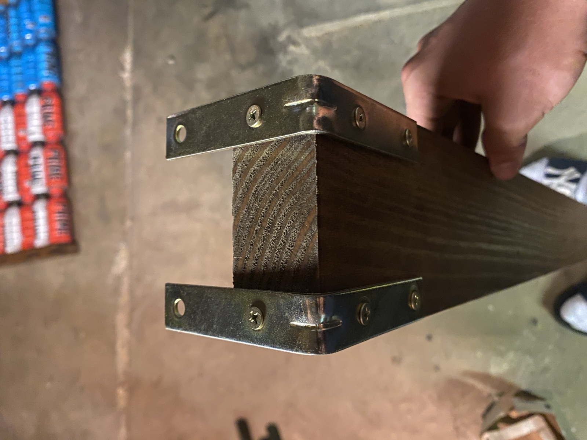
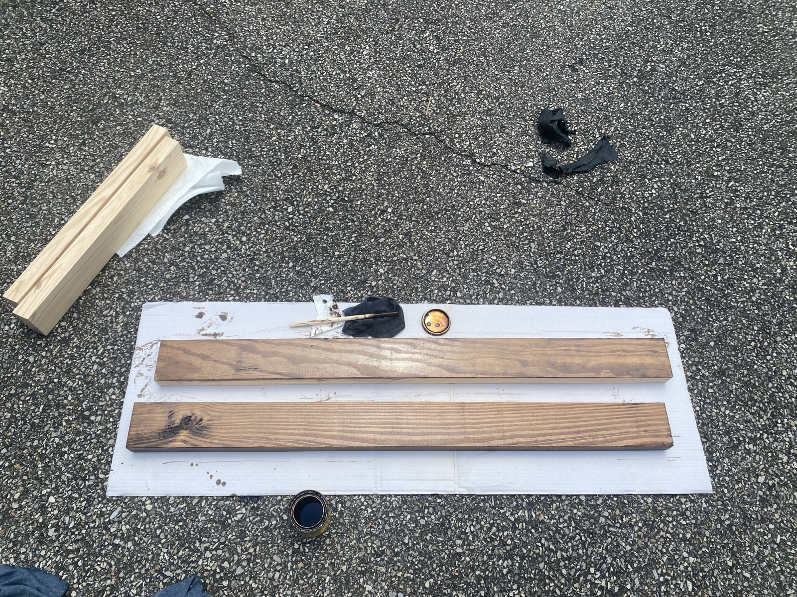

Prime American Flag
A creative wall-mounted American flag sculpture crafted from Prime Hydration bottles set within a custom handcrafted wooden frame.
Concept & Fabrication
My "Prime American Flag" is a custom pop-art fabrication project designed to reconstruct the iconic American flag using color-coordinated Prime Hydration bottles:
- Blue Raspberry: The 50-star union canton
- Tropical Punch: The red stripes
- Meta Moon: The white stripes
The build required precise dimensional planning to ensure all bottles aligned symmetrically into seamless rows. I milled, drilled, and stained custom wooden backing rails and a heavy-duty outer perimeter frame, locked together with polished metal corner reinforcement brackets for a clean, gallery-ready presentation. Even being only 5 bottles wide by 7 bottles tall, it's close to 4' x 2'. Maybe one day I'll go for all 13 stripes.
Finished Flag Gallery

The Completed Flag
The full finished American flag installation, showcasing overall symmetry, vibrant bottle color contrast, and hand-stained wooden frame. It's currently hung in my dorm room.

Corner Hardware & Joinery
Close-up of the metal reinforcement corner brackets securing the solid wood frame.

Frame Staining & Prep
Hand-applying rich wood stain to the pine perimeter frame boards before final assembly.